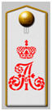

История 1-го Симбирского Александра I кадетского корпуса уходит корнями к первому военно-учебному заведению Сибири –Омскому Войсковому казачьему училищу (1813-1826), которое было основано 1 мая 1813 г. на средства Сибирского линейного казачьего войска. Инициатором создания училища был генерал-лейтенант Григорий Иванович Глазенап. Задачей училища было дать Сибирскому казачьему войску и государственным учреждениям края образованных служилых людей. В 1821 г. генерал-лейтенант П.М. Капцевич обратился к императору с ходатайством разрешить производить лучших выпускников училища в офицеры, и с 1822 г. училище стало регулярно выпускать офицеров в войска. В 1826 г. училище было переименовано в Училище Сибирского линейного казачьего войска (1826-1845), которое находилось в подчинении командира отдельного Сибирского корпуса, с 1830 г. перешло на полное государственное содержание. В 1828 г. к нему присоединили «Азиатскую школу», через 8 лет преобразованную в класс восточных языков. С 1833 г. в училище стали принимать дворян – детей офицеров регулярных войск и чиновников Сибири, а через год в нем появилась особая Дворянская рота. В начале 1840-х годов бывший тогда директором училища генерал-майор Ф.А. Шрамм подготовил проект преобразования училища в корпус. В 1845 г. проект был утвержден и училище было переименовано в Сибирский кадетский корпус.
Здание 1-го Сибирского Императора Александра I кадетского корпуса. Почтовая открытка. 1911 г.
В 1866 г. в рамках проводимых в стране реформ военного образования корпус был преобразован в Сибирскую военную гимназию, отличительной особенностью которой было то, что в нее без вступительных экзаменов принимали детей киргизов и казахский султанов и старшин. В гимназии сохранялось преподавание татарского языка.

Погон кадета 1-го Сибирского Императора Александра I кадетского корпуса
Корпус дал России немало известных людей. Среди его выпускников целя плеяда профессоров столичных военных академий и университетов: профессор астрономии Петербургского университета Н. Каменьщиков, профессор химии Михайловской артиллерийской академии А. Сапожников, известный историк А.Н. де Лазари, ставший одним из ведущих топографов СССР В.В Бехтерев и многие другие. Среди ставших офицерами и генералами выпускников корпуса наиболее известны Л.Г. Корнилов, впоследствии Верховный главнокомандующий русской армией и один из лидеров белого движения и Герой Советского Союза генерал-майор Д.М. Карбышев. Корпус окончил также видный советский партийный деятель В.В. Куйбышев.
В 1917 г. корпус был переименован в гимназию. Кадеты корпуса не приняли ни Февральскую, ни Октябрьскую революции и активно боролись против новой власти. В начале 1919 г. Верховный правитель России адмирал А.В. Колчак переименовал гимназию в 1-й Сибирский корпус и восстановил занятия в нем. Однако осенью 1919 г., когда к Омску подошли части Красной Армии, корпус был эвакуирован во Владивосток. Он был размещен на острове Русском и возобновил занятия, которые несмотря на постоянно менявшуюся военно-политическую обстановку в крае продолжались до 1922 г. 25 октября 1922 г. началась эвакуация корпуса. Кадет разместили на судах Сибирской военной флотилии и корпус навсегда покинул Россию.